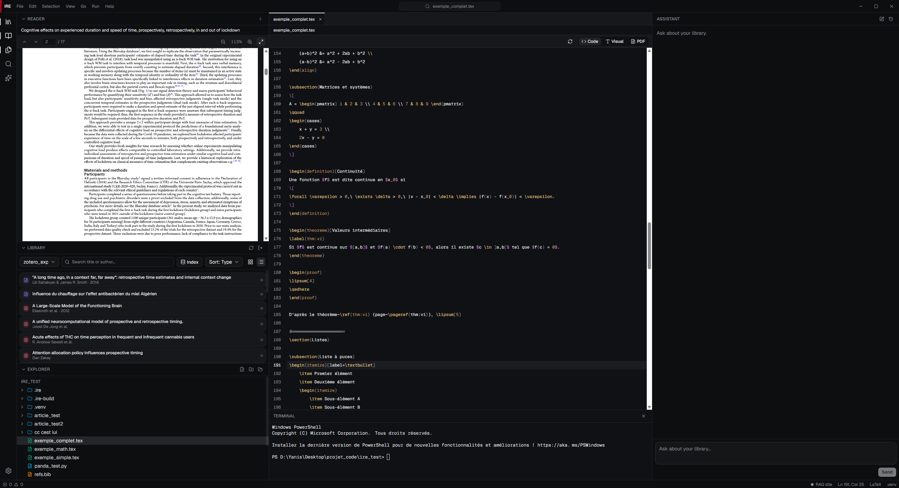

Personal project · 2026–now
Shen
A local-first research IDE for scientists: one desktop app pairing your Zotero library, a LaTeX/Python editor and a private AI assistant that answers straight from your own papers, with sources you can click back to.

About the project
Writing a paper usually means juggling three tools at once: a reference manager on one side, an editor on the other, and, increasingly, an AI chat that knows nothing about the papers you actually cite. Shen collapses that into a single three-panel desktop workspace: your Zotero library, a LaTeX/Python editor, and an assistant that reads from your own library instead of the open web.
The assistant runs citation-grounded retrieval (RAG) over your papers, so every answer ships with its sources. The magic moment: clicking a citation jumps the PDF viewer to the exact passage and highlights it in place, down to the bounding box on the page, so you can always trace a claim back to where it comes from. And it stays private: the library, the search index and the retrieval all run on your machine.
Main features
-
Three-panel workspace
Bibliography, editor and assistant in one window, modelled on the VS Code interaction you already know.
-
Zotero, natively
Your library synced through Zotero's official Web API (one-click OAuth), not a fragile database hack, with a built-in PDF reader.
-
A real editor
LaTeX, Python and text with open/save, syntax support and an integrated terminal, so writing and analysis live side by side.
-
Grounded AI assistant
Hybrid semantic + keyword search over your papers; bring your own key (Anthropic by default) or run fully offline with a local model.
-
Clickable citations
Every source jumps to and highlights the exact passage in the PDF, at the right position on the page.
-
Local-first by design
No account, no cloud store; your papers never leave the machine.
Tech stack
Shen is a Tauri 2 desktop app: a Rust core for OS access and Zotero sync, a React/TypeScript interface, and a Python service for the retrieval pipeline. The two sides talk only through a typed, versioned contract, so the app and the AI engine evolve independently. Under the hood, retrieval combines a Qdrant vector store with a GROBID pass that extracts page-level coordinates, the basis for those pixel-accurate citation highlights.